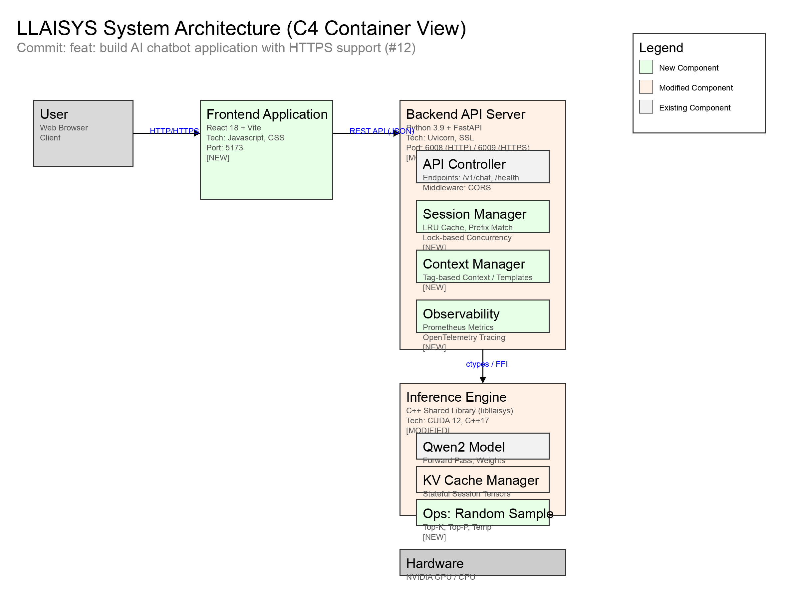

Figure 3-1: LLAISYS Intelligent Chat System Interface
Figure 3-1: LLAISYS Intelligent Chat System InterfaceDate: March 15, 2026
Author: no_charger
LLAISYS (Let's Learn AI SYStem) is an educational yet high-performance deep learning inference system designed to bridge the gap between theoretical knowledge and system-level implementation. The project aims to build a full-stack AI system from scratch, covering low-level tensor operations, custom CUDA kernels, operator optimization, and high-level application serving.
The current phase of the project focuses on two major milestones:
Deep Learning models, particularly Large Language Models (LLMs), are compute and memory-intensive. CPU-only inference is insufficient for real-time applications.
To transform the inference engine into a usable product, the following features are required:
The LLAISYS Chatbot system adopts a layered heterogeneous architecture, integrating a React-based frontend, a Python FastAPI backend, and a high-performance C++ inference engine.

Figure 1-1: LLAISYS C4 Container Architecture Diagramlibllaisys) now supporting stateful KV-Cache sessions and random sampling operators.The backend exposes a RESTful API compatible with OpenAI's Chat Completion format, enhanced with context management capabilities.
POST /v1/chat/completionsmax_sessions (default: 10). Excess requests return 503 Service Unavailable.Request Example:
{
"model": "qwen2",
"messages": [
{"role": "user", "content": "Hello"}
],
"temperature": 0.7,
"top_p": 0.9,
"top_k": 50,
"stream": true,
"session_id": "optional-uuid-v4"
}
Response Example (Stream):
data: {"id":"...", "object":"chat.completion.chunk", "created":123, "model":"qwen2", "choices":[{"index":0, "delta":{"role":"assistant"}, "finish_reason":null}]}
data: {"id":"...", "object":"chat.completion.chunk", "created":123, "model":"qwen2", "choices":[{"index":0, "delta":{"content":"Hello"}, "finish_reason":null}]}
data: [DONE]
POST /v1/context/items200 OK (Success), 400 Bad Request (Validation error), 404 Not Found (for DELETE), 409 Conflict (Session busy), 503 Service Unavailable (Server at capacity).The Context Management system utilizes Jinja2 templates for dynamic prompt construction.
src/chatbot/backend/context_manager.py, it uses a BaseLoader for string-based templates and enables autoescape.filter_by_tag and exclude_by_tag to manipulate context items.use_template=True, the system_prompt is treated as a Jinja2 template. The engine injects all current context_items into the rendering context, allowing developers to dynamically construct the final prompt based on tagged knowledge.erDiagram
SessionMeta ||--o{ ChatMessage : contains
SessionMeta {
string session_id PK
pointer session_ptr "C++ Handle"
float last_accessed
bool in_use
int[] history_ids
}
ChatMessage {
string role
string content
}
ContextItem {
string id PK
string content
string[] tags
json metadata
}
ContextItemRequest:
{
"type": "object",
"properties": {
"id": {"type": "string"},
"content": {"type": "string"},
"tags": {"type": "array", "items": {"type": "string"}},
"metadata": {"type": "object"}
},
"required": ["id", "content"]
}
The system utilizes Pydantic models defined in src/chatbot/backend/schemas.py to enforce strict type checking and validation for all API interactions.
messages, sampling configs (temperature, top_p, top_k), max_tokens, stream, system_prompt, and use_template.ChatCompletionChunkDelta).id and content, with optional tags and metadata.The system implements a Prefix Caching strategy on top of a KV-Cache Pool to optimize multi-turn conversations.
server.py)session_store dictionary acts as a KV-Cache Pool, protecting SessionMeta objects with a threading.Lock.session_id is provided and valid.in_use) sessions for the longest common prefix of input_ids.max_sessions is reached.in_use flag prevents multiple requests from modifying the same session simultaneously.qwen2.cc)LlaisysQwen2Session holds k_cache and v_cache tensor vectors, representing the cached Key and Value states for each layer.rewind_session simply updates the pos index without freeing memory, allowing instant reuse of cached KV pairs that match the prefix.The new random sampling operator replaces deterministic Argmax to support creative generation.
std::sort and cumulative sum on std::vector<pair<idx, val>>.cub::DeviceReduce::Max to find max logit.cub::DeviceRadixSort sorts pairs of (probability, index).cub::DeviceScan::InclusiveSum computes CDF.thrust::lower_bound finds the token index.The system integrates Prometheus metrics and OpenTelemetry tracing.
/metricsprometheus_client libraryllaisys_requests_total for throughput and llaisys_request_latency_seconds for response time.A Grafana dashboard (llaisys_dashboard.json) is provided with panels for:
* Request Rate (QPS)
* Error Rate (%)
* P95/P99 Latency
* Total Requests Served
Optimizations were applied to key operators to maximize memory bandwidth and minimize latency.
float4 (128-bit) loads/stores in add, linear (bias), and rms_norm to maximize global memory bandwidth.rms_norm (Square -> Mean -> Normalize) and swiglu (Gate -> Silu -> Mul) to reduce kernel launch overhead and memory round-trips.linear operator, cublasHandle_t is managed as a static thread_local resource to eliminate the ~300μs creation overhead per call.rms_norm and argmax for efficient block-level reductions.Code Snippet: Vectorized Add Kernel
// Example of vectorized load for bandwidth optimization
float4 a_val = *reinterpret_cast<const float4*>(&A[idx]);
float4 b_val = *reinterpret_cast<const float4*>(&B[idx]);
float4 c_val;
c_val.x = a_val.x + b_val.x;
// ... processing y, z, w
*reinterpret_cast<float4*>(&C[idx]) = c_val;
The new Chat UI provides a clean, responsive interface for interacting with the model.
Figure 3-1: LLAISYS Intelligent Chat System Interface
Features:
* Collapsible section to view the model's internal reasoning (parsed from <think> tags).
* Real-time token display using Server-Sent Events (SSE).
* Automatically manages session IDs for continuous conversation.
bash
xmake f --nv-gpu=y -cv
xmake && xmake installbash
python test/test_ops.py --device nvidia --profilebash
python test/test_infer.py --model <model_path> --device nvidia --testLLAISYS demonstrates significant performance advantages, particularly in small-batch scenarios (latency-sensitive) and bandwidth-bound operations.
| Operator | Shape | Precision | LLAISYS Time | Speedup vs PyTorch Eager | Speedup vs Torch Compile |
|---|---|---|---|---|---|
| RoPE | (2, 1, 4) | FP16 | 0.006 ms | 13.82x | 3.38x |
| RMS Norm | (1, 4) | FP32 | 0.007 ms | 4.26x | 3.07x |
| SwiGLU | (512, 4096) | BF16 | 0.013 ms | 4.27x | 3.61x |
| Linear | (2, 3) | FP32 | 0.011 ms | 1.03x | 2.85x |
| Attention | q=2, kv=2 | FP32 | 0.014 ms | 6.52x | 4.40x |
cuBLAS, the gains come from efficient bias addition and handle management.linear implementation was 30x slower due to creating cublasHandle on every call. Solved using static thread_local.RuntimeError: dictionary changed size in session store. Solved by store_lock.in_use flag reservation.argmax kernel uses a single block, limiting it to small tensors and poor scalability.powf is called repeatedly; precomputed frequency tables would improve performance.Multi-User Serving:
Distributed Inference (Project #5):
Linear and Attention heads across multiple GPUs.Advanced Optimizations:
Argmax with a multi-block reduction algorithm.Feature Expansion:
Memory Optimization:
| Code | Description | Solution |
|---|---|---|
| 409 | Session Busy | Retry request or use a different session ID. |
| 503 | Model Not Loaded | Ensure server startup completed successfully. |
| 503 | Max Capacity | Wait for a session to become free (LRU eviction). |
Trace IDs are generated by OpenTelemetry SDK. Currently, ConsoleSpanExporter is used for debugging. In production, configure OTEL_EXPORTER_OTLP_ENDPOINT to send traces to Jaeger/Zipkin.
Prepare Environment & Dependencies
requirements.txt and xmake for C++ compilation.Compile the Backend
libllaisys shared library with CUDA support.
bash
xmake f --nv-gpu=y -cv
xmake && xmake installStart the Server
bash
export MODEL_PATH="/root/autodl-tmp/models/DeepSeek-R1-Distill-Qwen-1.5B" && python scripts/start.py --device nvidia --max-steps 50000 --no-https --model $MODEL_PATHtext
2026-03-16 08:01:20,715 - [INFO] - Starting Backend Server...
2026-03-16 08:01:22,717 - [INFO] - Waiting for model to load...
2026-03-16 08:01:30,755 - [INFO] - Successfully connected to http://localhost:6008/health
2026-03-16 08:01:30,756 - [INFO] - Building frontend...
...
2026-03-16 08:01:44,376 - [INFO] - ALL SERVICES STARTED SUCCESSFULLY
2026-03-16 08:01:44,376 - [INFO] - Frontend URL: http://localhost:6006
2026-03-16 08:01:44,376 - [INFO] - Backend URL: http://localhost:6008| Parameter | Type | Default | Range/Enums | Description | Required | Tuning Advice |
|---|---|---|---|---|---|---|
model |
str | "" |
Valid local directory | Path to the model weights directory. | Yes | Ensure disk IO is fast (SSD/NVMe) to reduce loading time. |
device |
str | "cpu" |
cpu, nvidia |
Hardware backend for inference. | No | Use nvidia for optimal performance. |
max_steps |
int | 1024 |
>0 |
Maximum number of tokens to generate per request. | No | Increase for longer tasks, but watch memory usage. |
temperature |
float | 0.7 |
(0.0, 2.0] |
Controls randomness in sampling. | No | Lower for factual answers, higher for creative text. |
top_k |
int | 50 |
>0 |
Limits sampling to top K tokens. | No | 50 is a good balance; smaller values increase determinism. |
top_p |
float | 0.9 |
(0.0, 1.0] |
Nucleus sampling probability threshold. | No | Use with temperature for dynamic vocabulary pruning. |
| Parameter | Type | Default | Range/Enums | Description | Required | Tuning Advice |
|---|---|---|---|---|---|---|
no_https |
bool | False |
True, False |
Disable HTTPS and use HTTP only. | No | Use True for local dev/testing; False for production. |
max_sessions |
int | 10 |
>0 |
Maximum number of concurrent chat sessions (KV Cache). | No | Depends on VRAM. Reduce if OOM occurs. |
port |
int | 6008 |
1024-65535 |
Backend API port. | No | Change if default port is occupied. |
Dependency Footnote:
top_kandtop_pcan be used together. The sampling logic will applytop_kfiltering first, followed bytop_pmasking.